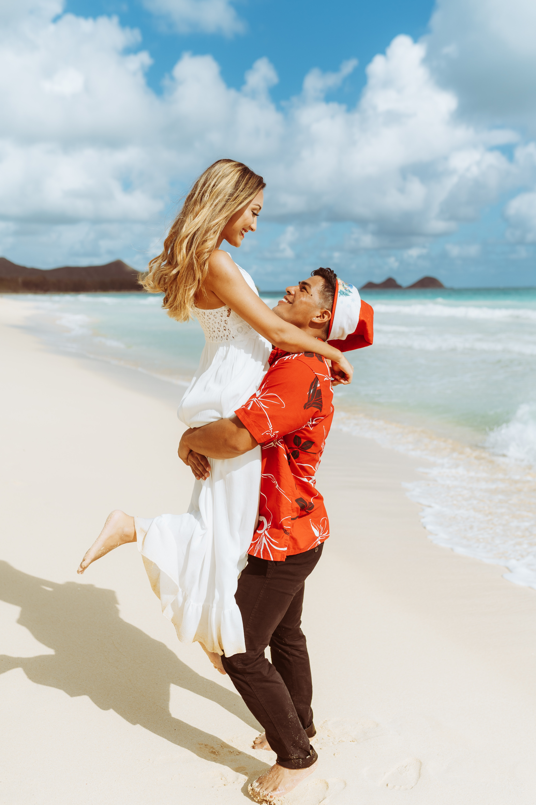
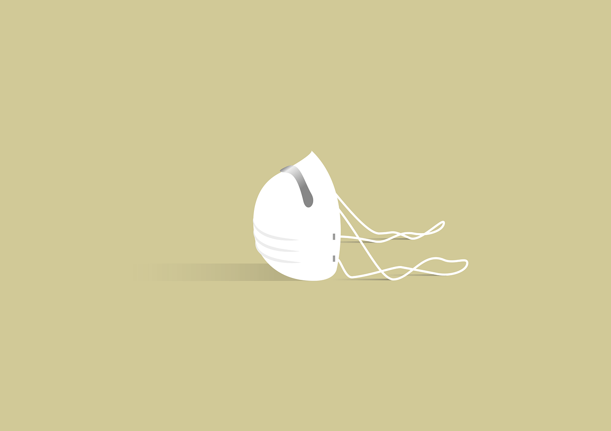

Here at Pacific Trails Resort we want you to be relaxed and at zen, our mission statement is one of peace, tranquility and adventure. Here we strive to make sure that every stress you have in your daily life is dropped off at the entrance to our luxury patented Yurts, and instead a big glass of wine, delicious food options( Vegan, Vegetarian, Pescatarian, and Gluten Free food options available) are what is picked up instead.
At Pacific Trails our main goal is to enrich your sense of self through our many offerings from daily morning yoga sessions that are sure to align your body, mind and chakras, to the multiple hiking trails that will push your body to its limit giving you a sense of accomplishment when finished, along with a beautiful view of the sun rise or set across the Golden Coastline, Pacific Trails Resort has everything a person(s) with a need for self enrichment could ever want.

Our Founders Harry and Amelie celebrating their anniversary on the shores of the Pacific Trails
In 2008, our founders Harry and Amelie, who were born and raised in the San Francisco bay area, met while attending the University of California San Francisco through their mutual love of adventure and the ocean they would frequent many beaches along the coastline of the Bay Area.After receiving their degress from the University they decided that the world should be able to view the great Pacific Ocean and welcome into their lives the tranquility and natural mental healing that it brings.
In 2012 Amelie and Harry decided to take the next step in their adventerous lives and open Pacific Trails Resort, leaving their tech 9-5 jobs to bring enrichment to the lives of others and since then Pacific Trails Resort has been featured in numerous magazines all around the United States as well as received recognition in international waters for the high class,quality, and service that they and their staff bring to every guest.

We here at Pacific Trails Resort can understand your concern when it comes to the risk of exposure. So to minimize this we are following all CDC rulings of 6-feet social distancing as well as regular deep cleaning of all high contact areas and objects. We want you to be as relaxed and stress-free as possible here at Pacific Trails Resort and we are fully committed to making sure you and your loved ones visiting are taken care of.